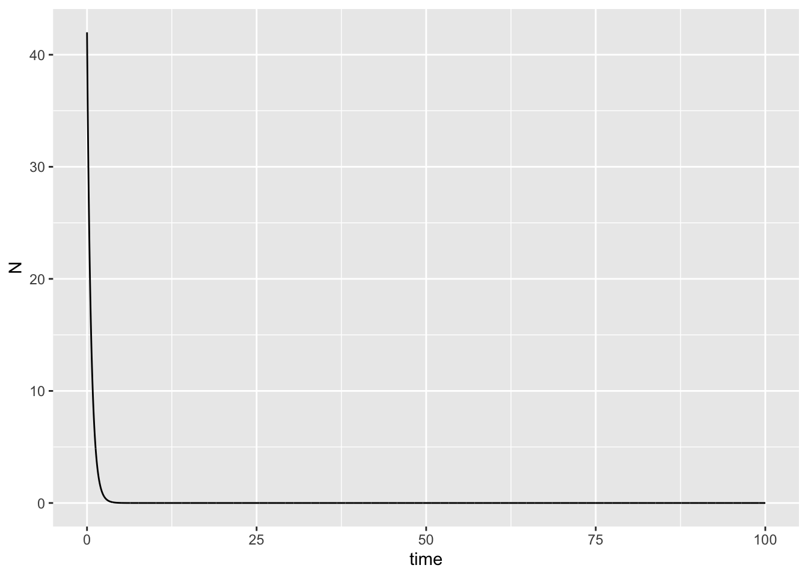
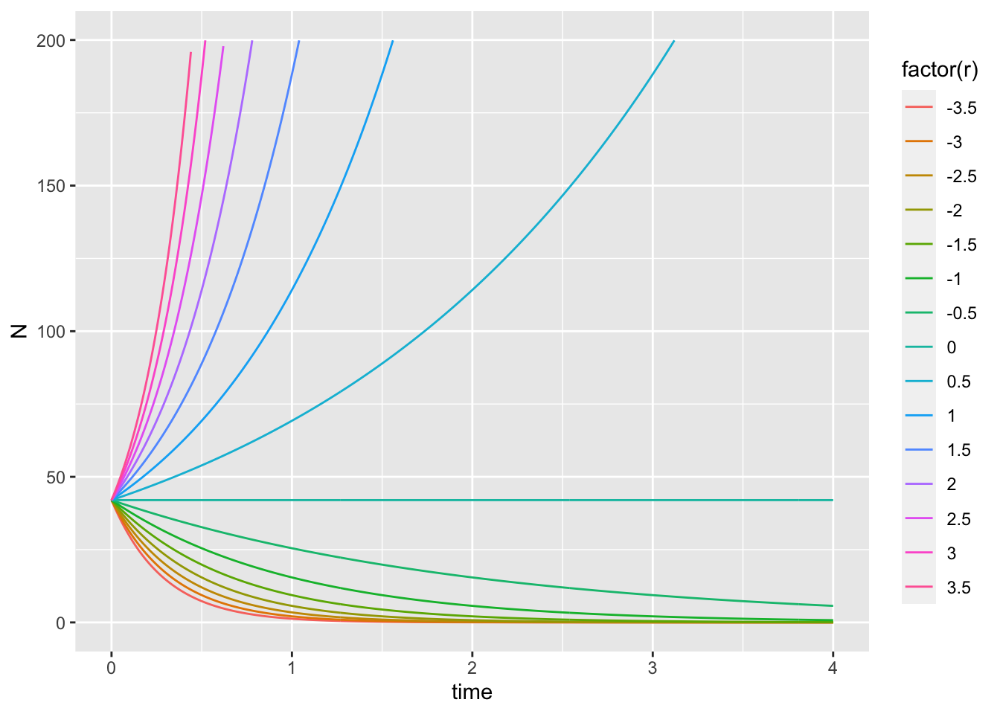
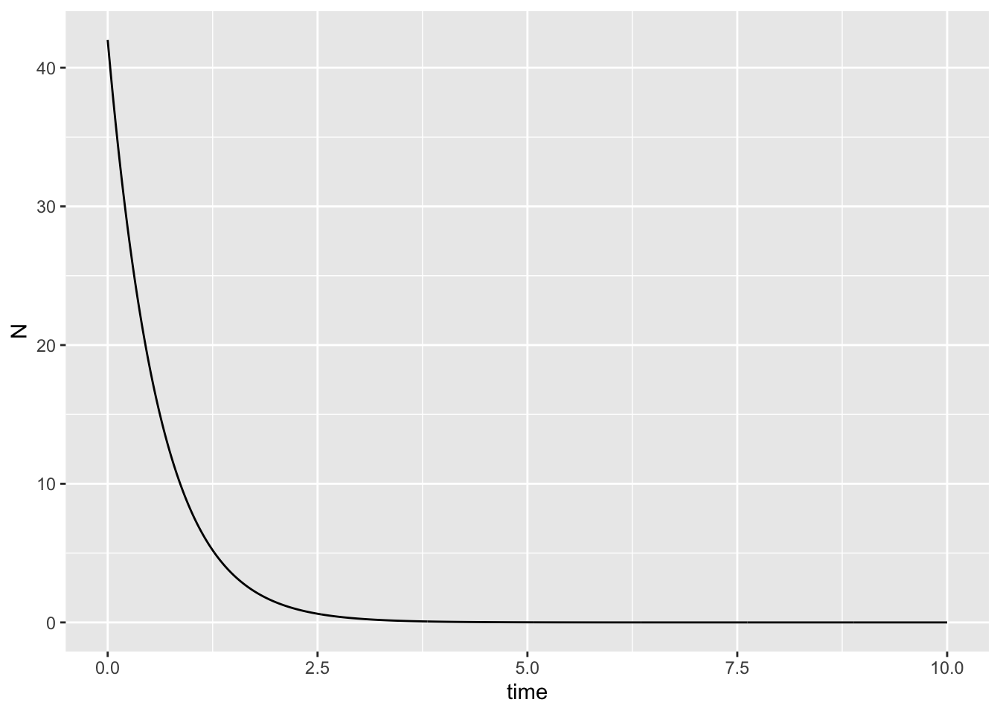
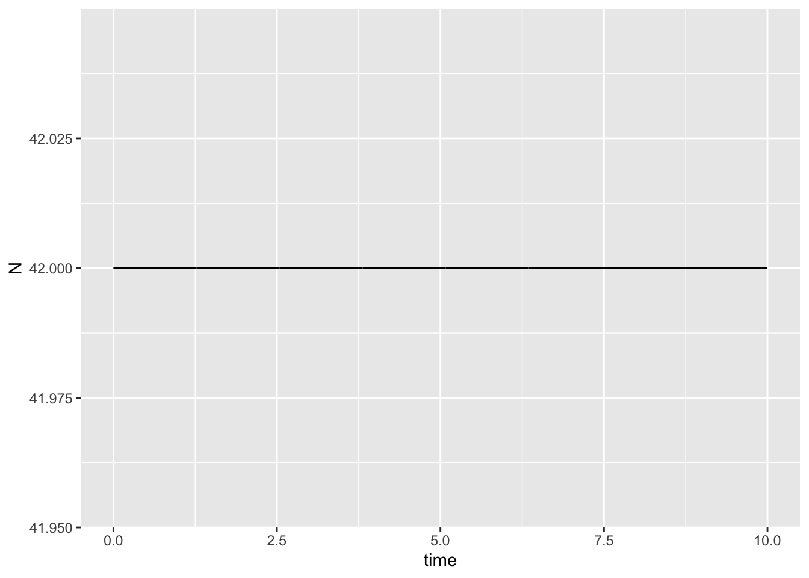
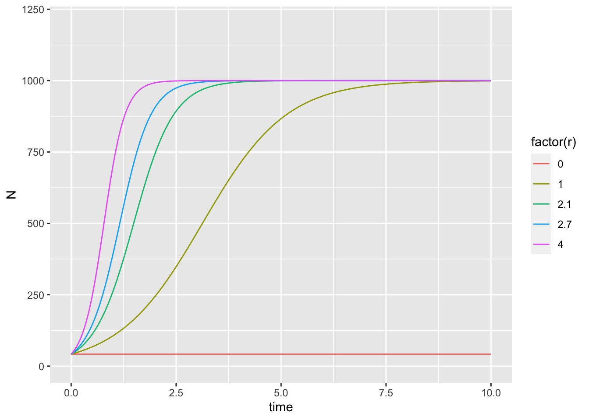

Week 6, Lecture 3.1 Notes
Jelena H. Pantel
2022-11-17 18:28:02
Population ecology
## Exponential growth
cont_exp <- function(t, state, parameters) {
with(as.list(c(state, parameters)), {
dN <- r * N
return(list(dN))
})
}
parameters <- c(r = 1.7)
state <- c(N = 42)
times <- seq(0, 100, by = 0.01)
out <- deSolve::ode(y = state, times = times, func = cont_exp, parms = parameters)
out.g <- as.data.frame(out)
ggplot2::ggplot(out.g,aes(time,N)) + geom_line()
parameters <- c(r = -1.7)
out.g <- as.data.frame(deSolve::ode(y = state, times = times, func = cont_exp, parms = parameters))
ggplot2::ggplot(out.g,aes(time,N)) + geom_line()
parameters <- c(r = 0)
out.g <- as.data.frame(deSolve::ode(y = state, times = times, func = cont_exp, parms = parameters))
ggplot2::ggplot(out.g,aes(time,N)) + geom_line()# Across a range of r values
r_range <- seq(-3.5, 3.5, by = 0.5)
out.g <- array(NA,dim=c(length(times)*length(r_range),3),dimnames=list(NULL,c("time","N","r")))
for(i in 1:length(r_range)){
parameters <- c(r = r_range[i])
out <- deSolve::ode(y = state, times = times, func = cont_exp, parms = parameters)
out2 <- as.data.frame(out)
out.g[(((length(times) * i)+1) - length(times)):(length(times) * i),3] <- r_range[i]
out.g[(((length(times) * i)+1) - length(times)):(length(times) * i),1:2] <- out[,]
}
out.g <- as.data.frame(out.g)
p <- ggplot(out.g, aes(time, N))
p2 <- p + geom_line(aes(colour = factor(r)))
p3 <- p2 + ylim(0, 200) + xlim(0,4)
p3## Warning: Removed 145992 rows containing missing values (`geom_line()`).
## Logistic growth
cont_log <- function(t, state, parameters) {
with(as.list(c(state, parameters)), {
dN <- r * N * (1 - (N/K))
return(list(dN))
})
}
parameters <- c(r = 1.7,K = 1000)
state <- c(N = 42)
times <- seq(0, 10, by = 0.01)
out <- deSolve::ode(y = state, times = times, func = cont_log, parms = parameters)
out.g <- as.data.frame(out)
ggplot2::ggplot(out.g,aes(time,N)) + geom_line()
parameters <- c(r = -1.7,K = 1000)
out.g <- as.data.frame(deSolve::ode(y = state, times = times, func = cont_log, parms = parameters))
ggplot2::ggplot(out.g,aes(time,N)) + geom_line()
parameters <- c(r = 0,K = 1000)
out.g <- as.data.frame(deSolve::ode(y = state, times = times, func = cont_log, parms = parameters))
ggplot2::ggplot(out.g,aes(time,N)) + geom_line()
# Across a range of r values
r_range <- c(0,1,2.1,2.7,4)
out.g <- array(NA,dim=c(length(times)*length(r_range),3),dimnames=list(NULL,c("time","N","r")))
for(i in 1:length(r_range)){
parameters <- c(r = r_range[i], K = 1000)
out <- deSolve::ode(y = state, times = times, func = cont_log, parms = parameters)
out2 <- as.data.frame(out)
out.g[(((length(times) * i)+1) - length(times)):(length(times) * i),3] <- r_range[i]
out.g[(((length(times) * i)+1) - length(times)):(length(times) * i),1:2] <- out[,]
}
out.g <- as.data.frame(out.g)
p <- ggplot(out.g, aes(time, N))
p2 <- p + geom_line(aes(colour = factor(r)))
p3 <- p2 + ylim(0, 1200) + xlim(0,10)
p3